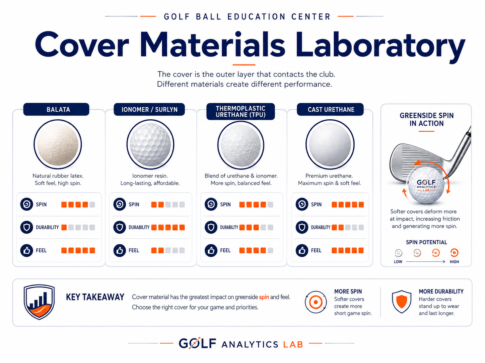

Why the Outside of a Golf Ball Has an Outsized Impact on Your Game
Part Three of Golf Analytics Lab's Four C's Series By Golf Analytics Lab
Introduction
Stand in the golf ball aisle of any golf store and you'll see terms like Tour Urethane, Ionomer, and Premium Feel. The cover of a golf ball is incredibly thin, yet it has a tremendous influence on wedge spin, putting feel, durability, and ultimately how a golfer scores. At Golf Analytics Lab, Cover is one of the Four C's because it often separates golf balls that otherwise look nearly identical.

To understand why cover materials matter so much, it helps to visualize how friction at impact influences spin, control, and durability.
How Cover Friction Influences Spin and Durability
This animation explores how cover friction, groove interaction, and material behavior influence spin generation, short-game control, and wear resistance.
A Brief History of Golf Ball Covers
Golf ball covers have evolved from stitched leather on featherie balls to gutta-percha, soft balata, durable ionomer materials such as Surlyn®, and today's advanced urethane covers. Each step represented a major advance in feel, durability, and performance.
Balata: The Gold Standard for Feel
Balata covers delivered exceptional feel and greenside spin but were easily cut and damaged. Professionals accepted the tradeoff because the short-game performance was unmatched.
The Rise of Ionomer
Ionomer covers revolutionized recreational golf by providing outstanding durability, excellent distance, and lower manufacturing costs. The tradeoff was generally less greenside spin and a firmer feel than balata.
Modern Urethane
Advances in polymer chemistry led to synthetic urethane covers that combine soft feel, high spin, and much better durability than balata. Most premium Tour golf balls now use urethane covers.
Cast Urethane vs. Thermoplastic Urethane
Cast urethane provides outstanding consistency, soft feel, and greenside control but is expensive to manufacture. Thermoplastic urethane (TPU) offers lower production costs and excellent durability while continuing to improve in performance.
Why the Cover Matters
The greatest performance differences appear inside 100 yards. Cover material influences pitch shots, chip shots, bunker play, putting feel, and the ability to stop approach shots quickly on the green.
Choosing the Right Cover
High-handicap golfers often benefit from the value and durability of ionomer-covered balls. Players seeking maximum greenside control may prefer urethane-covered Tour balls. The best choice depends on the golfer's priorities and budget.
Cover and the Four C's
Cover should always be evaluated together with Compression, Construction, and Cost. Looking at all four characteristics provides a much more complete understanding of golf ball performance.
Final Thoughts
The cover may be the thinnest component of a golf ball, but it has one of the biggest impacts on scoring. Understanding cover materials helps golfers choose equipment based on engineering rather than marketing claims.
Future Golf Analytics Lab Feature
The Cover Materials Laboratory will become a signature educational feature, including microscope-style illustrations of balata, ionomer, cast urethane, and thermoplastic urethane, wedge-groove interaction diagrams, durability comparisons, and GAL Lab Notes explaining how cover materials influence real-world performance.